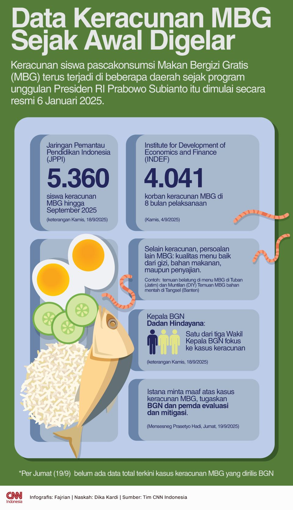

335 Siswa Diduga Keracunan MBG di Bangga, BGN Minta Maaf
Sabtu, 20 September 2025 21.01 WIB
Jakarta, CNN Indonesia -- Badan Gizi Nasional (BGN) menyampaikan permohonan maaf atas insiden keracunan massal yang diduga terjadi akibat konsumsi Makan Bergizi Gratis (MBG) di Kabupaten Banggai Kepulauan, Sulawesi Tengah. Insiden tersebut menyebabkan ratusan siswa harus menjalani perawatan medis.
Sebagai bentuk tanggung jawab, BGN telah mengirimkan tim langsung ke lokasi sejak Jumat (19/9) untuk memastikan penanganan berjalan maksimal.
"Kami sangat prihatin atas kejadian ini dan turut berempati kepada seluruh pasien serta keluarga yang terdampak. BGN bersama seluruh pihak terkait terus bekerja keras memastikan penanganan kesehatan terbaik serta melakukan langkah investigasi menyeluruh atas insiden ini," ujar Kepala Biro Hukum dan Humas BGN Khairul Hidayati, dalam keterangan tertulisnya, Sabtu (20/9).
Direktur RSUD Trikora Feldy Deki menyampaikan bahwa sejak kasus pertama terdeteksi pada Rabu (17/9), total 335 pasien telah ditangani. Dari jumlah tersebut, 301 pasien telah pulih dan dipulangkan, sementara 34 lainnya masih menjalani perawatan akibat gejala seperti sesak napas, kram otot dada, tangan, dan kaki.
"Mengenai kondisi tersebut, pihak rumah sakit telah memberikan penanganan maksimal dengan memberikan obat serta penanganan medis lainnya sesuai dengan gejala yang dialami masing-masing korban," jelas Feldy.
Untuk memperkuat layanan medis, RSUD Trikora mendapatkan tambahan dukungan dari RSUP dr. Wahidin Sudirohusodo, Makassar. Sebanyak empat dokter spesialis dan tiga perawat tiba di Salakan pada Sabtu pagi untuk membantu proses pemulihan pasien.
"Dukungan ini tentunya sangat penting dan bernilai tinggi bagi kami, keluarga pasien, dan pasien itu sendiri, terutama dalam meningkatkan sisi psikologis," ujarnya.
Kondisi pasien stabil
Perwakilan tim medis Kementerian Kesehatan dari RSUP dr. Wahidin, Rusmin, memastikan bahwa kondisi seluruh pasien yang masih dirawat dalam keadaan stabil.
"Alhamdulillah keadaannya stabil, tidak mengancam jiwa. Alhamdulillah artinya anak-anak ini dalam proses recovery," kata Rusmin.
Ia juga menegaskan bahwa hasil pemeriksaan tidak menunjukkan tanda-tanda kerusakan saraf atau gejala berat lainnya yang sebelumnya sempat dikhawatirkan publik.
"Karena dari hasil pemeriksaan feses dan anamnesis tidak ada pemeriksaan yang mengarah ke kerusakan saraf yang dicurigai mengakibatkan kejang. Dan itu bukan tanda-tanda yang kita khawatirkan seperti khalayak ramai asumsikan," jelasnya.
BGN menegaskan fokus utamanya saat ini adalah penanganan korban, dengan koordinasi intensif bersama Kementerian Kesehatan, Badan Komunikasi Pemerintah, TNI, TNI AU, Polri, dan pemerintah daerah.
Secara paralel, BGN juga tengah bekerja sama dengan kepolisian untuk menginvestigasi operasionalisasi SPPG yang diduga berkaitan dengan insiden keamanan pangan ini. Hasil audit dan investigasi tersebut dijanjikan akan disampaikan secara terbuka kepada masyarakat.
